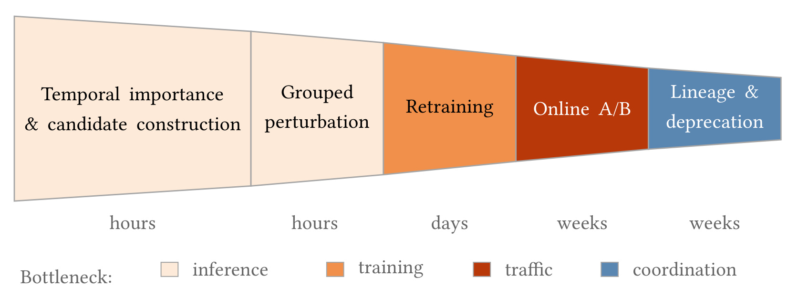
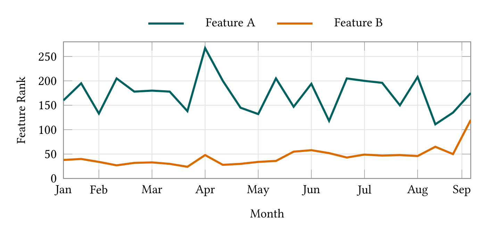
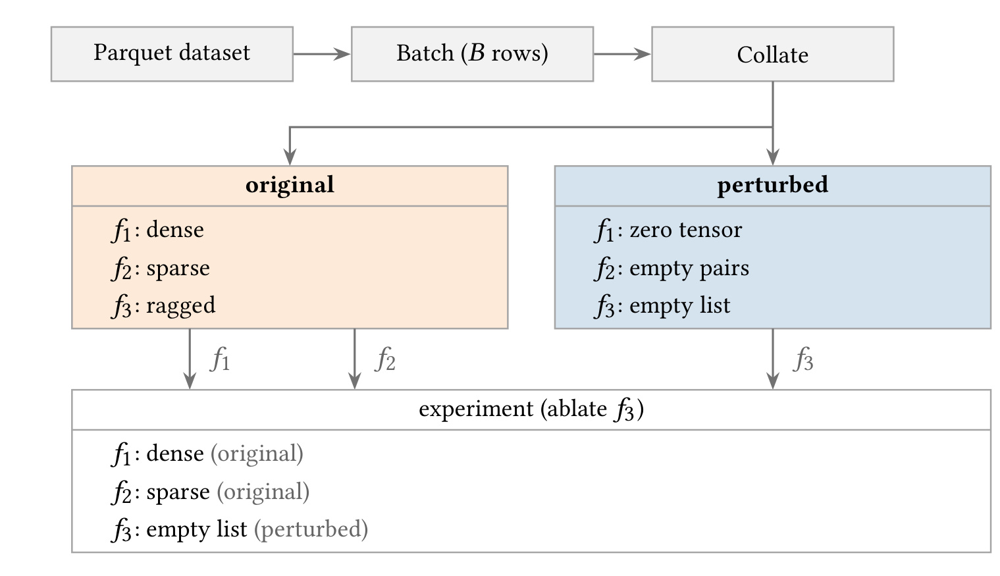
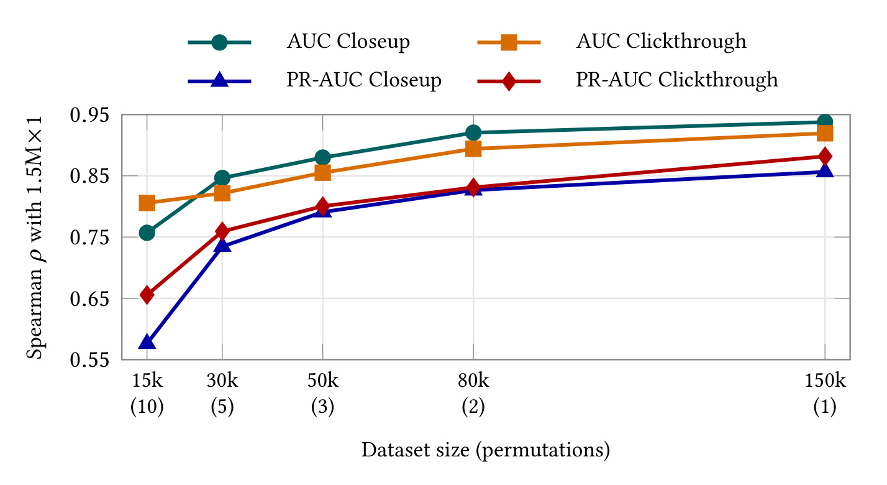
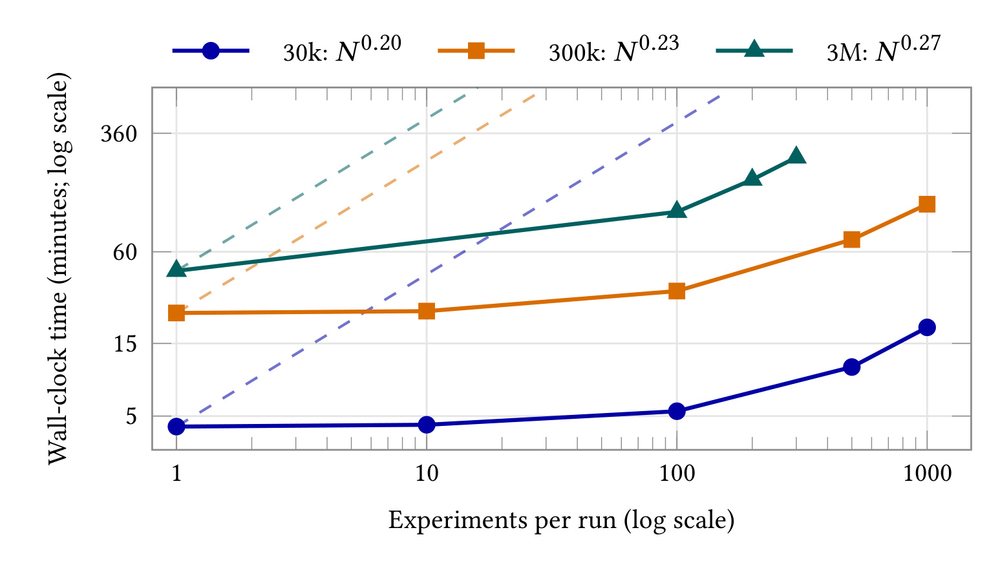
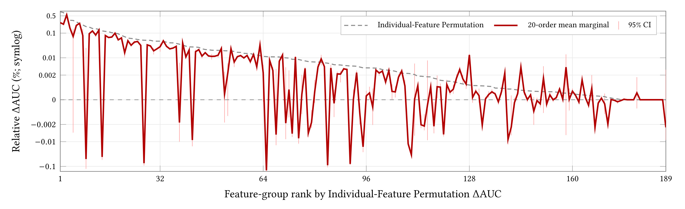
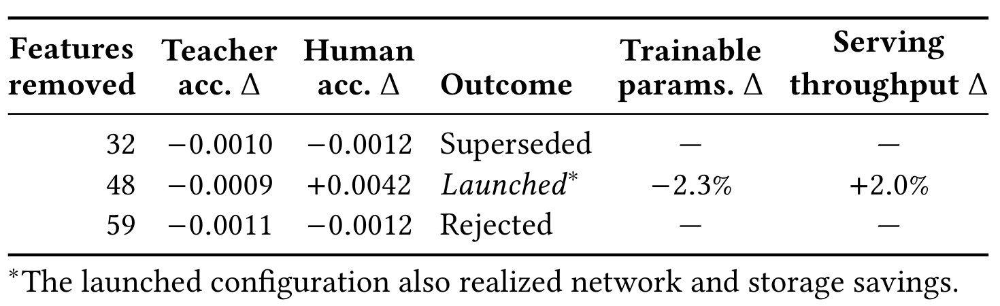
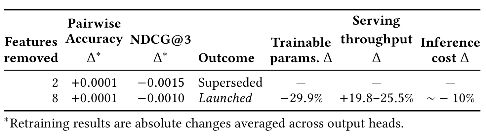

Pinterest FORTE：把特征退役做成可持续的生产流程
Pinterest 的 Vishnu Arun、Adam Obeng、Tianyou Wang、Zilin Ren、Mukuntha Narayanan Sundararaman、Han Wang、Shivin Thukral、Zhixiang Wang、Saurabh Vishwas Joshi 与 Darren Reger 在 FORTE: A Production Framework for Feature Evaluation and Deprecation in Industrial Recommender Systems 中讨论了工业推荐系统的特征删除治理。论文于 2026 年 10 月 9 日公开，本笔记于 2026 年 10 月 13 日精读完整 11 页 PDF。代码状态：本轮未核验到独立实现入口。以下结果均为作者报告，本轮未复现。
线上特征生命周期存在不对称：新增特征只需在某些指标上产生收益，删除特征却需要证明所有相关指标没有退化。交互作用、每日重要性变化、模型与数据漂移、有限的 A/B 流量、线上护栏回退以及多模型共享依赖，都可能使特征删除半途失败。FORTE 用每日扰动评估、联合候选验证、重训与线上测试、特征谱系追踪，把识别弱依赖与真正停止采集连接成完整流程。
1. 背景和问题
特征积累为什么容易，特征退出为什么困难
工业推荐系统通常长期增加特征：新内容理解向量、用户行为序列、统计交叉、上下文信号和稀疏标识，都可能以一个任务指标的提升获得进入线上模型的资格。随着训练数据与网络结构迭代，旧信号的价值可能被新模块吸收；但是，只要它尚未明确导致故障，就容易继续保留。Pinterest 部署数百个检索、排序与互动预测模型，每个模型读取数十到数千个特征。这样的规模使“检查一个模型里哪些特征没用”从分析工作变成平台运营问题：模型、数据、特征生产任务与实验流量都有自己的更新节奏，孤立的重要性排名不足以完成删除。
作者把问题限定为已经上线模型的特征退役，而不是新模型开发期的特征选择。后者可能追求泛化更好或模型更小，可以在训练阶段灵活调整输入；前者需要与当前线上控制组比较，保证用户体验和商业护栏不退化。特征新增主要以某个收益作为动机，特征删除主要以资源节省作为动机，因而两者面对不同的优先级。假设某个弱特征仅增加少量存储或延迟，其删除虽然长期有益，却很难赢得一次珍贵的 A/B 实验。这种激励差异导致工程债务积累，不能单靠更准确的归因算法解决。
对于含有许多特征的模型，所有非空删除集合呈指数增长。真正值得测试的候选只占很小一部分，但它仍可能远多于允许在线上同时运行的实验臂数量。逐个特征重训需要大量训练资源；直接将排名靠后的特征一并删除又会遇到相关性与交互。两个特征可能互为替代，单独扰动任何一个都不明显掉指标；同时扰动二者才会显露联合依赖。反过来，一个特征在某个输出头重要，在另一个输出头有害。只看一个任务或把单特征变化简单相加，都容易产生过于乐观的候选集合。
六类失败模式如何阻断删除闭环
论文列出的失败模式有六类。第一类是特征交互，它使局部测量无法直接代表组合删除的后果。第二类是数据漂移：用户行为、内容供给、市场与流量结构改变后，过去不重要的特征可能变得重要。第三类是模型版本变化，新的检查点可能以不同方式利用同一输入。第二、第三类容易混在一起，因此必须明确每次测量采用的检查点和样本日期。第四类是线上实验带宽竞争，删除任务需要与潜在收益更高的新功能争夺流量。第五类是真正的线上退化，即便离线测试中性，也可能触发用户行为护栏。第六类是跨模型协调，在一个模型中移除输入，不代表其采集链路可以停止。
这里的成本有不同层次。模型少一个输入，可能降低部分可训练参数、网络通信量与特征读取成本；但如果其他模型仍然读取它，特征表、日志字段和物化任务依然存在。若错误地停止上游生产，影响面会远超单个模型。相反，只发布小模型、不回收数据链路，也会让节省停留在一小部分。作者将完整退役拆成“从模型中识别弱依赖集合”和“查清完整谱系并结束数据生产”两部分，强调收益必须沿消费关系落到真正不再使用的资源上。
既有方法各有取舍。边际置换重要性不依赖网络内部结构，直接问冻结模型在信号被破坏后会怎样，因此适合异构工业模型。留一特征重训成本随特征数增长，基于联盟的归因需要大量组合采样，梯度类方法依赖模型内部和参考输入。FORTE 没有宣称在归因准确性上替代这些方法，而是选取能高频执行的扰动测量，辅以更贵的后续门槛。它也明确区分边际置换、固定空值消融和条件重要性：批内交换是经验边际替换，置空是一个明确的缺失输入状态，都不等于估计给定其他特征后的条件分布。
每日可执行比一次性精细归因更重要
一个只能季度运行一次的重要性报告很可能在上线审批时已经过时。FORTE 将评估设计为按日运行，读取评估分区、解析当前承接线上流量的模型并保存时序结果。数据分区延迟时，需要跳过和补跑；模型发生替换时，需要开启新的分析窗口。单次排名因此变成可回看、可比较、可配置的候选信号。它没有消除噪声与漂移，却使团队可以观察弱依赖是否持续出现，以及该结论是否覆盖新版本上线后的足够时间。
对推荐团队而言，这类系统的研究价值在于把计算、统计与发布责任放在同一条链路上。它要求回答几个不同问题：当前模型是否使用这个信号，多个弱信号组合是否仍然安全，重训后是否保持质量，线上用户是否受到影响，最终还有谁消费这个特征。每个问题对应不同证据和不同资源预算。把这些问题一次性压缩为“重要性低于阈值就删除”，会丢失最重要的生产约束。FORTE 的工业案例恰好显示，最大候选集合能通过离线门槛，却仍被线上护栏拒绝。因此，本文应作为特征治理框架阅读，不能将其简单解释为自动删特征的算法。
另一方面，特征成本并不是一个静态数字。一个字段可能在多个模型共享缓存，也可能只在某条高流量链路反复读取；一个特征的移除可以削减网络载荷，却几乎不改变主干参数。因而候选构造必须结合实际消费路径、资源账本与模型结构，才能将“弱依赖”转成“值得占用实验机会”。本文同时讨论搜索与大规模多任务排序，正好展示这种差异：前者删去近半输入的参数收益仍较小，后者只删数个输入就取得明显参数与吞吐改善。判断技术价值时应关注删除闭环是否可重复、是否减少测试浪费，而不应把最大单项加速当作框架普遍效果。
2. 方法
2.1 时序评估与候选漏斗
FORTE 首先对每天的评估数据与生产检查点建立配对比较，原始样本与扰动样本使用同一个冻结模型。论文用方向调整后的相对变化作为重要性分数，刻意让其方向与线上 A/B 变化一致：
符号解释：$G$ 是被共同扰动的特征集合，$M_0$ 是原始输入的指标，$M_G$ 是扰动后的指标；当指标越大越好时 $s_M=+1$，越小越好时 $s_M=-1$；$FI_j(t)$ 是第 $t$ 天第 $j$ 个特征的带符号变化，$I_j(t)$ 则恢复为传统的依赖方向。负的 $FI$ 表示扰动损害质量，模型依赖该信号；接近零表示弱测量依赖；正值表示扰动改善质量。 因此较大的 $FI$ 并非更重要，候选趋近零或为正；时序筛选使用 $I=-FI$，较大的 $I$ 才代表更强依赖。
配对比较控制了原始与扰动条件共同经历的指标水平变化，但不会消除真实敏感性变化或随机置换噪声。团队在配置的回看窗口内综合低平均依赖、排名接近尾部且稳定、依赖斜率非正等信号，并要求这些条件覆盖所有指定输出头和回看窗口。默认门槛保守，窗口长度、阈值和头部范围仍由模型负责人依据迭代节奏设置。候选还要结合预估成本，形成几个嵌套集合；这些集合先经过便宜的扰动评估，再竞争训练与线上流量。论文没有给出所有模型通用的一套窗口参数。

Figure 1 将资源限制直接画入流程：前两阶段依赖推理，候选重训依赖训练容量，线上验证依赖流量，最终退役依赖跨团队协调。图中的时间单位分别是小时、天与周，说明系统设计不是让一个更精细的指标直接代替发布流程，而是让广泛筛选发生在边际成本较低的阶段。每进入下一层，候选集合数量应减少，因为后续机会成本更高。没有通过联合扰动的集合，通常不值得占用数天训练；没有通过重训的集合，更不值得占用数周线上流量。这里的时间是工作流程尺度，不应作为对所有模型固定的运行时承诺。
漏斗最右端仍有谱系与退役，意味着上线小模型只完成了一部分。只有查清其他消费者并经过负责人审阅，才能停止共享数据生产。图中的协调瓶颈也解释了为什么框架保留人工审核：一个特征被删除后可能需要恢复，日志与数据任务一旦停掉，恢复历史数据存在真实成本。自动化负责测量、发现与依赖查询，发布和彻底回收仍有人的责任边界。 若移植这套设计，应该分别统计进入各门槛的候选数、失败原因和等待时间；这属于基于流程结构的工程建议，论文未报告这些运营指标。
从这张流程图还能读出一种失败成本控制策略：候选在小时级阶段被拒绝，损失主要是推理预算；到线上阶段被拒绝，则已经付出了训练、流量和日历时间。前置门槛的意义在于降低后者发生的频率，并不是保证它永远不会发生。后续搜索实验中仍有一个最大候选被拒绝，说明作者保留在线门槛具有实际必要性。

Figure 2 的纵轴是特征排名，数字较小表示排序更靠前、通常更重要。绿色特征总体位于较后位置，但波动明显；橙色特征长期靠前，到窗口末尾突然向后移动。两条轨迹说明，单日看到低排名会把持续弱依赖与临时变化混为一谈。绿色信号不能仅凭某一天的尾部位置通过门槛，橙色信号也不能因最近一刻变弱就立刻退役。平均、稳定性与趋势需要共同使用，才有机会区分它们的历史形态。
图中月份只是原始观测顺序的时间标签，并没有提供统一的阈值或置信区间。不能从这幅示意轨迹推导作者实际删除了哪一个特征。更值得保留的是窗口语义：生产传感器会切换当前检查点，但一个趋势分析窗口内应固定模型；跨版本比较必须注明窗口刷新。若模型刚更新，过去尾部排名也不能自动当成新模型证据，这正是时序评估与模型版本管理需要共同设计的原因。
2.2 联合扰动、重训与线上门槛
嵌套候选集通过联合扰动验证组合效果。单特征不重要可能源于互相替代，只有一并破坏信号才会发现真实依赖。FORTE 先过滤指标非中性的集合，然后按潜在成本节省排序，保留有限个集合进入重训；保留数量由团队的训练能力、流量与成本目标决定。联合扰动测量组合依赖，并没有变成条件重要性，也没有消除分布外输入。 这一限制说明为什么后面还必须重训：冻结模型面对置空或交换信号，与删除特征后重新学习权重的模型是不同对象。
重训阶段以现有生产模型为基线，以真正不再读取候选集合的新模型为处理组；中性的离线质量才允许进入线上。线上再以多个星期的 A/B 比较用户行为和模型性能护栏。通过后进入人工审计与发布审核，最终决定是否上线。离线扰动实验、重训候选和线上实验臂是三个不同单位，不能将上百个便宜的扰动实验理解为上百个在线处理组。这一划分把稀缺的线上资源留给经过多次缩小的集合，也避免把离线重要性误当作删除效果的因果结论。
2.3 谱系追踪与分阶段退役
平台维护动态的特征—模型映射，检查一个特征是否已经没有下游消费者。模型中移除之后，完全失去引用的特征才有资格进入正式退役。过程分四步：先在 dataloader 阻断重新加入模型，随后在 dataset 层隐藏读取并传递到叶子数据集，再在 ingestion 层阻断评估与训练数据写入，最后从 logging 中彻底移除。这是按风险逐级推进的人工审计流程，不是一次数据库列删除。四层覆盖了消费入口、可读数据、数据生产和源头日志，少一层都可能让旧特征继续产生隐性成本或被意外恢复引用。
在 Pin Ranker 案例中，八个被模型移除的特征经过模型注册表查询，确认没有其他消费者；负责人审阅后，数据列才被移除，对应物化任务才停用。这个事实给出了闭环收益的来源，也提醒迁移时必须把“当前线上没有消费”与“训练、评估和回滚路径都不再依赖”分开审核。论文提供的是活跃消费映射和阶段阻断框架，未提供通用的回滚 SLA 或对所有历史训练任务的兼容性保证，因此工程实施仍要由本地数据治理规则补足。
2.4 虚拟化数据与池化执行
逐特征启动任务会反复支付模型加载、数据读取、GPU 分配与 actor 启动成本。FORTE 在读取列式评估数据并完成 collate 后，为每个批次构造原始与扰动两个字典。密集、稀疏和变长特征都按特征注册表的类型转换成模型实际消费的张量；置换采用对应类型的批内重排内核，消融采用对应类型的空表示。每个实验只需逐列选择来自哪个字典，而不必重新物化全份数据。

Figure 3 以消融第三个特征为例。原始字典保留 dense、sparse 与 ragged 数据，扰动字典分别提供 zero tensor、empty pairs 与 empty list。当前实验从原始字典取前两列，从扰动字典取第三列，因此语义是替换一个输入组的值，而不是重建一个独立数据集。原图里的第三列为空不等于所有特征都可无条件填零：稀疏索引和值的结构必须合法，变长列表必须保持消费协议，空表示需要在训练与评估中一致。Feature Registry 承担了跨生产者和消费者的类型约定。
推理 worker 每个批次仅接收一次这两个字典，随后循环配置好的实验集合。基线全部选原始列，其余实验选取自己的扰动组，使用已经加载的模型前向，并将结果标记为对应实验编号。模型加载、数据 I/O、actor 启动与 GPU 资源分配因此被摊销；前向与结果写入仍随实验数增长，没有免费消失。图中的“单次物化”应理解为按批处理的共享物化，而不是把无限大的全量表一次塞进内存。生产数据还经过文件内随机化与文件派发顺序随机化，以降低采集物理顺序的影响；这套两阶段过程是近似打乱，作者明确没有宣称与均匀全局洗牌等价。
字典复用的正确性也依赖实验之间没有状态污染：每次前向都应从配置重新选择列，并使用冻结评估状态，不能让前一实验修改后续实验会读取的原始张量。对于多头输出，还需让实验编号与每个头的聚合指标严格对应，否则池化省下运行成本却会损害结果可解释性。原图强调的选择机制为这种隔离提供了清晰接口，但本文并未给出所有类型内核和平台代码，因此复现时仍要检查空值与重排语义的一致性，而不是只模仿字典名称。
3. 实验结果
3.1 单次置换与样本预算
作者先对固定数据集与冻结模型定义可实现置换空间上的均值，再研究重复次数与样本数。批内置换的空间是各批次置换集合的乘积，未必等于全体样本的全局排列空间。因此“无偏”所对应的是实现空间的均值，而不是任意条件分布或总体因果作用。
符号解释：$A_G(\pi_r)$ 是第 $r$ 个随机排列后所得 ROC-AUC，$R$ 是独立均匀置换次数，$\mu_{n,G}$ 是固定数据和冻结模型下可实现置换空间的期望，$\sigma^2_{n,G}$ 是单次置换 AUC 方差，$A_0>0$ 是未扰动基线。重复次数只将方差除以 $R$，不会改变目标均值。对于正负样本数都与总样本数同阶且逐行独立评分的情形，原文证明 $\sigma^2_{n,G}=O(1/n)$：交换两行的特征只会改变两行的分数，进而限制成对 AUC 比较受到的影响。
这条理论有明确的边界。推理期重新计算批归一化统计、列表或 slate 级联合评分、候选间 attention，以及扰动一行会改变邻居表示的 GNN，都可能不满足逐行敏感性假设。采用 listwise 训练目标并不一定违规，只要部署推理仍逐行评分即可。PR-AUC 能继承独立重复均值的方差除以次数这一恒等式，但不能自动继承 ROC-AUC 的样本数收敛率，特别是在高度不平衡任务上。作者将后者作为经验桥接来评估，没有把它写成定理。

Figure 4 横轴依次是十五千样本十次置换、三万五次、五万三次、八万两次与十五万一次，预算大致匹配；纵轴是与独立的一百五十万样本一次置换参考所得排名的 Spearman 相关性。两种任务头分别为 Closeup 与 Clickthrough，指标分别为 ROC-AUC 和 PR-AUC。四条曲线随着更大样本、较少重复而提升，在近似相同的样本前向预算下，十五万一次比十五千十次高出零点一一到零点二八。这支持把资源优先分给更多代表性样本，而非在小样本上不断重复随机化。
另一个实验对三百八十一个特征组分别在十五千与十五万样本上做十次置换，样本数增加一个数量级时，逐特征标准差中位数下降二点五八到三点一六倍。在十五万样本上，单次与其余九次均值的留一排名相关性为零点九零七到零点九五九，前二十重叠为百分之九十二到一百。这里支持的是候选排序的稳定性，不能声称每个接近零的重要性分数都已精确。两个样本集未被确认是嵌套子集，类别构成可能不同；参考也只做一次置换，因而不是无噪声真值。对小样本和噪声较大的尾部指标，作者仍认为三到五次重复有用。
曲线之间的差异也值得注意，精排的点击与近观任务并未具有相同的稳定性，标准差降低较弱的头也不一定排名相关性最弱。这说明原始指标噪声、特征得分差距与候选排序是不同统计对象。真正决策时，应在目标头上检查近零候选和前后顺序，而不能因为平均相关性很高就省略联合集合验证。比较样本预算时还要保证抽样能够覆盖时间、市场和长尾用户，样本增大但代表性变差并不自动带来更可靠的退役判断。
3.2 池化推理的摊销收益
效率评估使用同一冻结 Pin Ranker 检查点和相同计算配额，改变评估样本数量与扰动实验数量，隔离数据抽样之外的运行差异。三组规模分别为三万、三十万和三百万行。对照方案是每个特征实验独立读取并完成推理，池化方案共享物化与固定启动成本。

Figure 5 的横轴、纵轴都采用对数刻度，虚线展示从单实验时间外推的线性增长，实线展示池化测量。三组样本规模的经验增长指数分别约为零点二零、零点二三与零点二七，明显低于逐任务线性增长。一组三百万行、三百个实验的运行比原实现缩短五十四倍。五十四倍是离线扰动评估墙钟时间的加速，不能写成在线模型 serving 吞吐提高五十四倍。 对三万行样本，实验数增加一千倍仅使时间增加四点五倍，说明小数据时固定成本尤其显著。
在三百万行条件下，新增一个实验的边际耗时为四十一秒，而单独跑一次评估约需四十五分钟。它揭示了批量设计的资源优势：共享的数据读取与模型装载曾占据大量时间，池化把这些成本集中支付。样本规模变大后，增长指数上升，是因为模型前向占比更高；新增实验最终仍要执行模型运算和写出结果。作者测量的大样本曲线只到三百个实验，不能外推到任意千百万组合。该实验也没有证明不同 GPU 配额、模型类型和输出规模都具有相同指数。可迁移的原则是先分析固定成本再共享执行，具体吞吐要重新基准测试。
因此应将池化加速拆成固定成本节约和随实验增长的计算两部分来阅读。曲线越平，越说明原先评估方案重复做了大量公共工作；它不表示某个特征的实际在线推理成本很高，也不表示将它删除就能获得同量节省。评估平台的速度帮助团队更快发现候选，模型部署的速度则取决于删除后前向结构和服务系统。二者在论文中由不同实验测量，资源规划时也应进入不同账本，以免误估删除项目的投资回报。
3.3 联合扰动与顺序敏感性
联合验证采用一百五十万匹配样本，对一百八十九个通过单独非负置换门槛的特征组分析 Closeup AUC。按照单组弱依赖到强依赖的次序逐渐扩大集合，测量累计指标变化及新增组的边际贡献：
符号解释：$G_k$ 是排序路径上前 $k$ 组的联合扰动集合，$D_k$ 是其相对基线 AUC 变化，$m_k$ 是加入第 $k$ 组后的增量变化。由于 AUC 越大越好，正边际表示该上下文中的弱依赖或扰动改善，负边际意味着更强联合依赖。边际数值受已经加入哪些组影响，不能将固定路径的负号直接解释为该特征在所有上下文都重要。

Figure 6 的虚线按单独置换得分排序，红线与误差条是二十个随机添加顺序中的平均边际和置信区间，纵轴使用对称对数刻度，便于同时显示正负方向及近零小变化。两种测量在排序前端总体接近，但尾部经常跨越零线；它们在平均上相似，不代表每个组每次加入都保持同一方向。固定路径的一百七十六个非零边际中有六十八个为负，占百分之三十八点六。将单组得分相加会预测百分之六点五五四的改善，实际联合终点只有百分之三点零八四，最高累计变化在只扰动六十四个组时已达到百分之三点八九九，此后继续加入并非一直有益。
作者进一步采用二十个反向配对随机顺序，作为顺序敏感性诊断。它在形式上对应 Shapley 的排列采样估计，但二十个顺序无法精确识别一百八十九个组的独立归因，因此不能将红线视为稳定的全局真值。反向配对相对独立顺序降低了加权归因方差百分之八十三到九十，置信区间使用十个配对均值的 t 分布。平均边际总和为百分之三点零七九，与固定路径终点接近；总量估计的标准误是零点零零八个百分点。每个顺序的边际本来就望远镜式相消到全组合效果，所以总量很准与单个组归因不稳可以同时成立。此诊断需要二十条累计路径，原文明确不将它作为日常生产漏斗的一层。
多任务头让风险进一步放大。同一批组的总效应在 Closeup AUC、Closeup PR-AUC、Clickthrough AUC 与 Clickthrough PR-AUC 上分别为正三点零七九、正二点三四八、正一点九九六与负三点七六九百分比。这批信号在某些头可移除，在另一个头却承载质量，说明单头筛选不能替代全头门槛。部分输入在不同模型槽位出现，平均边际还可能给两个副本相反符号；共享信号的总影响比人为分配给每个槽位更清楚。在单组得分为正的一百七十六个候选中，二十顺序合计三千五百二十个边际仅有百分之七十点九保持正向，只有五十三个候选在所有顺序都为正。因此，顺序诊断增强了联合验证的必要性，而没有提供直接删除名单。
3.4 Search Relevance 删除案例
搜索相关性模型服务超过四十五种语言，将查询与候选 Pin 的相关性映射到五级序数标签。它是从多语言 cross-encoder LLM 教师蒸馏得到的实时学生系统，本文检查点又在前馈学生上加入更小的 cross-encoder。查询、Pin 文本与视觉或图向量、交互特征共一百一十一项。FORTE 同时计算置换与消融重要性，以时序门槛、成本分析和各头窗口约束形成三十二、四十八与五十九项的三个嵌套候选集。评估在指标层分别统计美国与非美国流量，复用同一推理过程。

Table 1 最值得观察的是三个候选都通过所有离线门槛，结果列却不同。教师准确率变化分别为负零点零零一零、负零点零零零九与负零点零零一一，人工准确率变化分别为负零点零零一二、正零点零零四二与负零点零零一二；这些都位于该模型的离线中性带。组消融五级准确率相对变化约百分之零点一，重新训练的学生在人类标注测试集上也中性。线上采用基于 LLM 评审标签的 sDCG@25 检查搜索相关性，三个实验臂均未见统计显著的相关性回退，美国与非美国分段结果也中性。但是最大五十九特征臂触发了一个次级护栏回退，因此被拒绝上线。
最终发布四十八特征集合，三十二集合被取代。四十八除以一百一十一约为百分之四十三点二四，四舍五入到一位小数约百分之四十三点二；网页摘要写为百分之四十三点三，而 PDF 摘要写百分之四十三点二，本文保留原始计数并避免制造精度一致的假象。发布版本仅减少百分之二点三的可训练参数，serving 吞吐提高百分之二，并减少进出网络流量、存储与 KV 特征存储成本。大量参数在 cross-encoder 主干中，删除许多边缘特征不必然删除相同比例权重。四十八特征臂的页面等待时间下降百分之零点一六九六，显著性为零点零零一二；这又是与吞吐不同的线上体验口径。
这里的“没有统计显著回退”不等于证明每个语言或用户群都等价。美国与非美国只有两个粗分段，无法覆盖四十五种语言内部差异；论文伦理部分明确承认这种分辨率不足。五十九集合的失败还提醒读者，离线中性只是进入线上实验的资格，不是上线许可证。未披露的次级护栏名称和完整效应量不应由笔记补造。可复用的结论是保留嵌套候选和上线审阅，让线上证据决定较安全的成本节省点，而非机械选择删除数量最多的一组。
3.5 Pin Ranker 删除案例
Pin Ranker 是多头 L2 排序模型，为一个类似视觉搜索的场景服务，约覆盖 Pinterest 一半流量。输入包含用户、查询 Pin 与候选 Pin 三元组，预测 closeup、clickthrough、repin、download 和重访留存。架构结合 transformer 用户序列编码、长期历史、DCNv2 交叉与 MMoE 多任务输出，具有数亿密集参数。本文先按所有输出头的 PR-AUC 置换变化筛选弱依赖，再与成本审计结合，得到两项与八项的嵌套集合。

Table 2 的离线 pairwise accuracy 绝对变化在两个集合均为正零点零零零一，NDCG@3 绝对变化分别为负零点零零一五与负零点零零一零，且这些变化是跨输出头平均的绝对数值，不是百分比。两组均处于该模型的离线中性范围。三周线上 A/B 中，clickthrough、closeup 与 repin 都没有统计显著回退，因而八项超集上线，两项集合被取代。八个特征减少了百分之二十九点九的可训练参数，CUDA Graph serving 基准吞吐提高百分之十九点八到二十五点五，推理成本约下降百分之十。这些是 Pin Ranker 的独立结果，不能套到搜索模型四十八项删除案例中。
参数比例与搜索案例的反差说明，应按特征承载的参数和计算估算收益，而非按输入列数估算。数个大规模嵌入或其消费模块可能占据大量权重，几十个较轻输入可能只改变很小的子模块。原文没有披露完整的八特征清单与逐模块成本拆分，所以不能进一步推断具体是哪类向量贡献了多少百分比。作者称年度基础设施成本节省达到数十万美元量级，既含小模型带来的参数、推理与吞吐收益，也含完成谱系退役后的数据存储与训练环节收益，未给出一套可迁移到其他组织的精确美元账本。
模型上线后，注册表查询确认八个信号没有剩余消费者，经 owner review 移除数据列并停用物化任务，才构成完整退役。日常重要性报告还有诊断用途：在既有残差连接变体里，非历史特征消融造成更负的 PR-AUC 变化，反映模型对内容与质量信号的依赖提高。这个例子支持使用 FORTE 验证架构改动是否按设计改变依赖，但不表示本文重新开展了所有相关架构实验。它引用既有 Pinterest 工作作为诊断语境，不能将被引论文中的效果归到 FORTE 退役收益上。
4. 总结
FORTE 的贡献是让特征退出具有一条可执行的证据链：低成本每日时序评估提供候选，联合扰动检查互相替代的信号，重训检查模型适应，数周 A/B 检查真实用户与护栏，消费谱系和人工审阅再完成数据回收。池化执行让广泛筛选从昂贵任务变成可以按日运行的监控工作；它服务于实验资源分配，而不是取消重训或线上验证。两个案例共同证明该流程在 Pinterest 有生产价值，也分别展示了候选越大未必越安全、删除比例越高未必越省参数。
迁移到推荐、广告或搜索团队时，可以先把特征注册表、冻结检查点、分区读取和输出头指标对应起来，再实现共享批次字典与类型安全的置换或空值。随后把各阶段记录串联为候选档案，明确谁负责线上门槛和最终数据关闭。成本估计应拆成权重、前向计算、网络、KV、训练输入与物化任务，而不能只统计特征数量。上述迁移方案是基于本文机制的分析判断，本轮没有部署或复现。尤其对跨候选 attention 排序模型，必须重新验证置换的敏感性和方差，不能直接引用本文 ROC-AUC 定理。
至少四项局限需要与成果一起保留。第一，边际置换会生成分布外输入，相关特征的归因可能高估或低估；联合组评估只处理操作层面的组合依赖，未完成条件归因。第二，单个特征或人工指定组可能遗漏仅通过高阶交互起作用的信号，低单项依赖不是全局冗余证明。第三，两阶段近似洗牌与批内置换限定了估计空间，样本代表性和市场构成仍需独立检查。第四，单次置换稳定性仅覆盖一个生产模型的两个头与两种指标，不能给每个模型和尾部任务相同保证。第五，美国与非美国的粗分段会掩盖语言与人群损害；聚合中性不是公平性结果。第六，效率取决于架构与资源环境，作者没有测量电力、加速器小时或排放，不能量化能源收益。
后续可沿三条方向推进。其一，自动发现交互群并结合条件重要性，让联合候选构造减少对人工经验的依赖，同时记录额外计算成本。其二，将时序重要性变化作为特征失效、数据质量与模型采用率预警，区分模型版本引起的跃迁与固定窗口内的数据漂移。其三，把分段验证细化到实际语言、地域和流量切片，并与成本档案、负责人审核及可恢复路径连接，评估删除决策对弱势样本的影响。若要验证单次置换策略，则应新增类别比例、重复次数和模型结构维度，以独立证据确认排序稳定性，而非仅追求总体相关系数。
读这篇论文最应保留的判断是：特征重要性是一种冻结模型依赖测量，特征删除是一项跨模型、跨数据链路的生产决策。前者足够便宜时可以改善后者的候选质量，但不能独立承诺安全。搜索最大候选被护栏拒绝、Pin Ranker 在 owner review 后才停用物化任务，分别指出了上线风险与闭环收益的边界。把这两条边界写进流程，比仅复制一个置换分数更接近 FORTE 的实际价值。
最后，完整数据退役的节省必须能由注册表与停用记录支持。只看到一个训练配置不再读取某列，仍不足以断言存储、物化与日志成本已经降低。保留候选版本、线上决定和负责人审阅的连接关系，有助于未来恢复、复查或进一步扩展到其他模型。